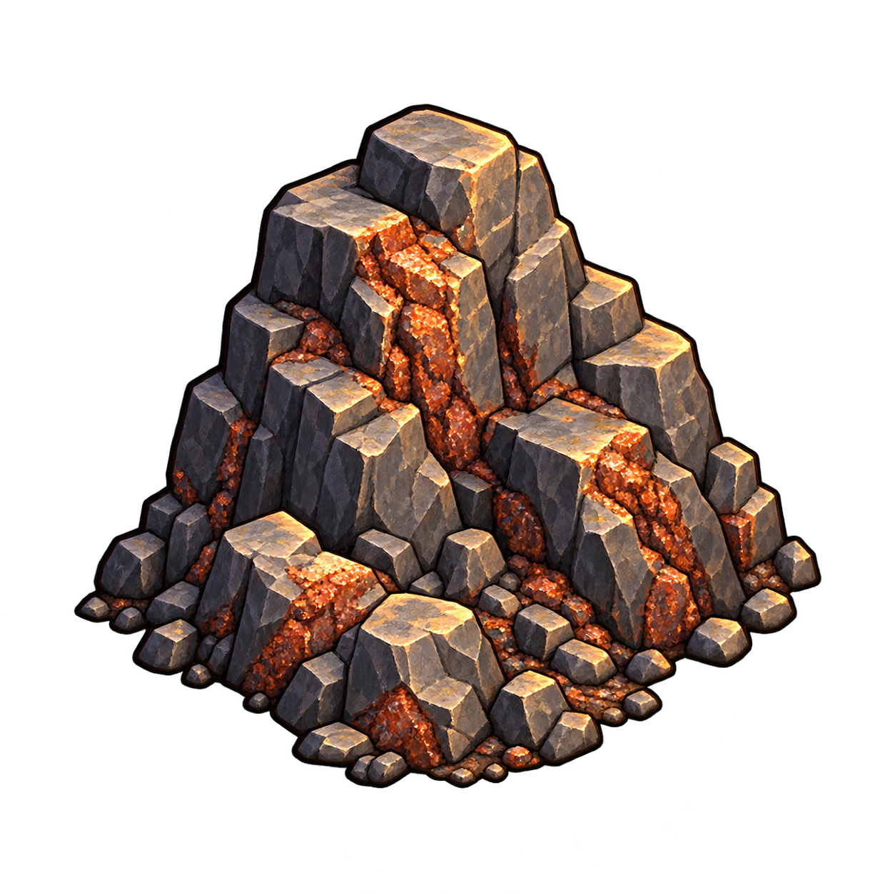
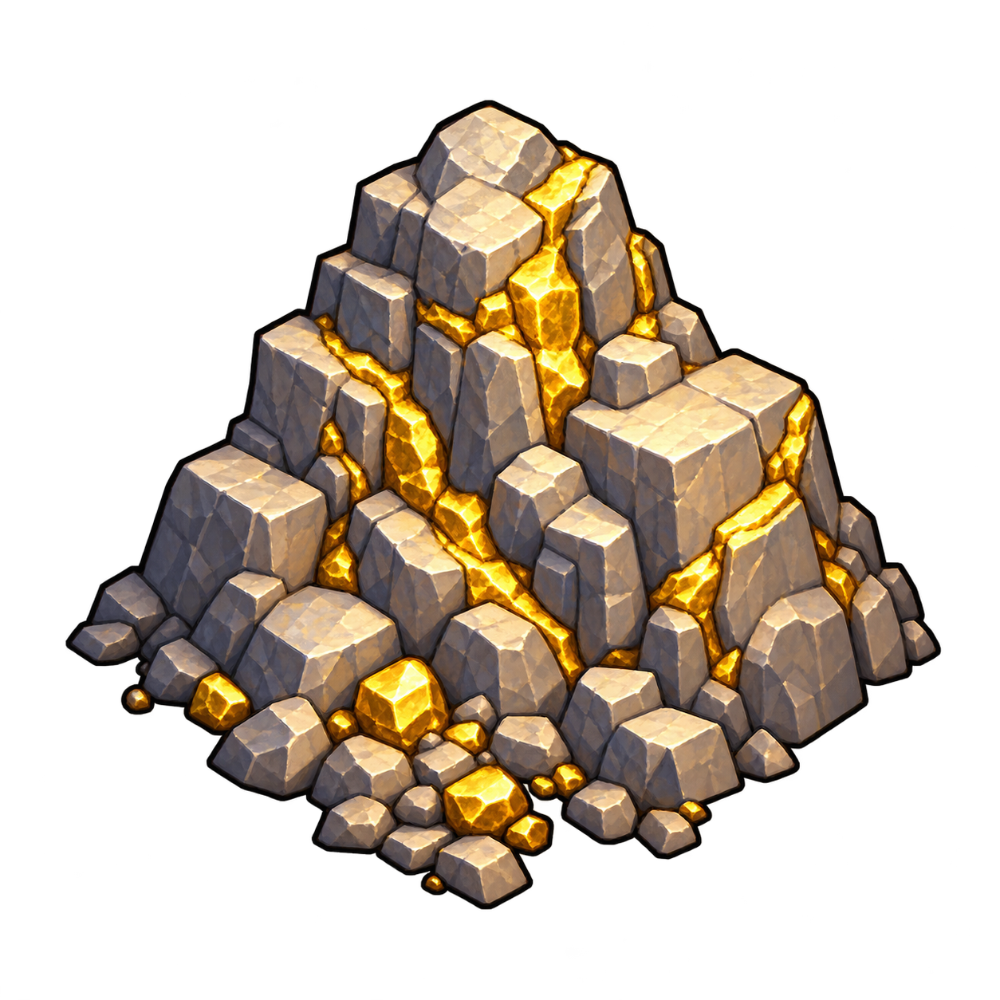
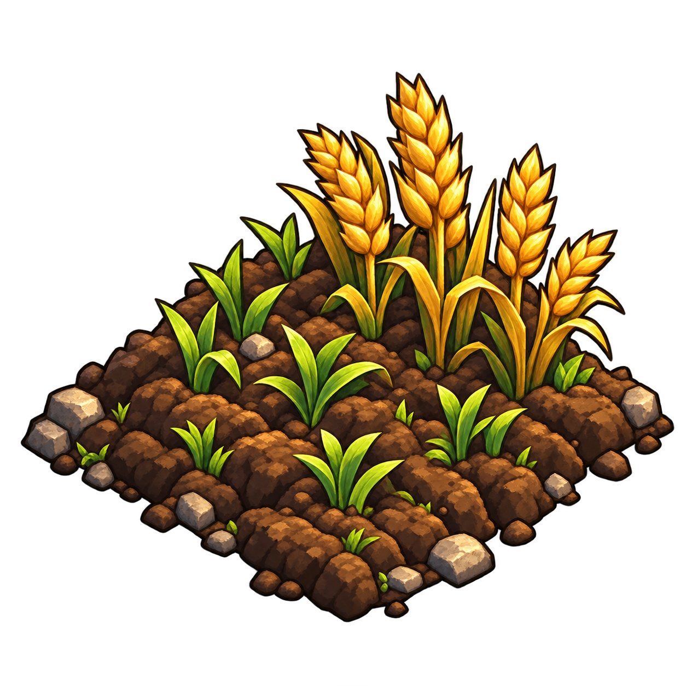

Conception des ressources cachées, campements, trésors, artefacts, donjons et parchemins d’indices.
Comprendre ce que cela implique
La découverte doit précéder une installation volontaire, puis l’évolution du campement selon la ressource. L’influence des lieux existants neutralise les contenus concernés.
Cette conception est prévue : le moteur actuel de prospection crée directement un lieu producteur. Les paramètres non décidés sont identifiés sans valeurs inventées.
Les découvertes exceptionnelles sous influence restent dans le lieu principal, sans marqueur ni interaction superposés. Les parchemins indiquent un lieu ou aident à rechercher sur place, exclusivement ; leur vente ou leur perte peut faire disparaître la découverte exceptionnelle selon des modalités encore à définir.
La disparition d’une découverte exceptionnelle concerne tous les joueurs de la partie. Les expéditions vers les trésors et donjons sont préparées : la compétence du groupe augmente la chance de revenir avec du butin. Les formules et les conséquences détaillées restent à définir.
Artefact : score d’expédition et un item puissant. Trésor : score d’expédition, or important et items. Donjon : puissance et expédition, or, item et XP. La préparation engage PNJ, volontaires, montures, matériel et ressources ; le héros peut transporter les moyens ou envoyer une mission depuis la tente de prospection après découverte. Les formules restent à définir.
La ressource du terrain limite les évolutions du camp : rien vers fort, bois vers camp de bûcheron, pierre vers carrière, terre fertile vers village ou ville, fer vers mine de fer et or vers mine d’or. Le camp est autorisé dans tous les cas. Une découverte exceptionnelle remportée par un joueur ou déclarée disparue perd son statut pour tous.
Les indices de localisation sont des cartes au trésor lisibles, générées automatiquement au début de la partie en séries de une à trois cartes selon la position et la valeur du site. Un nom, une anagramme, un ancien nom ou une légende peut désigner un lieu existant. Les PNJ peuvent expliquer ces désignations ; écouter une rumeur coûte 5 pièces d’or. Un module serveur commun pour les cartes et les informations de PNJ est recommandé, avec diffusion par dialogues et banque de rumeurs.
Les choix du dialogue donnent un bonus final au score d’expédition. Un exemple complet à six issues illustre cette préparation avec des valeurs proposées, non validées. Donjons, trésors et artefacts suivent le même processus de recherche. Les indices restent des items réutilisables, revendables pour archives lorsqu’ils deviennent obsolètes. L’utilisation de la recherche déclenche immédiatement une minute de recharge et réduit la discrétion de 50 % pendant une minute ; les ressources ne sont consommées qu’à la validation.
Toute tentative dans un donjon, réussie ou échouée, inflige des dégâts et modifie le moral du héros participant et des troupes engagées selon le résultat. Les valeurs, durées et pertes possibles restent à définir. Un héros qui ne participe pas à une expédition envoyée reste hors de ces conséquences.
Les répartitions naturelles et exceptionnelles sont validées, ainsi que le risque de disparition de 25 % et les archives à 5–10 or. Le bonus narratif dépend de la narration. Le barème plafonné d’expédition et sa formule de réussite sont désormais validés en conception. Le barème distinct de la jauge de recherche reste proposé, non validé.
Le socle persistant est désormais implémenté et documenté séparément : données versionnées, sauvegarde/reprise et confidentialité du bloc serveur. La génération est désormais raccordée au lancement neuf ; les interactions restent à implémenter. Le chargement d’une sauvegarde ne génère aucune ressource ni récompense supplémentaire.
La protection des connaissances est raccordée aux envois réseau : chaque joueur reçoit seulement ses découvertes, indices détenus et missions propres. Les destinations internes, fragments manquants, authenticité et tirages restent côté serveur.





Dans cet article
Détails de référence
Texte de référence mis en forme et conservé dans l’historique de cet article. Les paragraphes datés peuvent décrire une évolution ou une étape antérieure.
Spécification mise à jour le 28 octobre 2026 — implémentation progressive. La disponibilité des différentes étapes est précisée ci-dessous.
Le socle de persistance de l’exploration est maintenant implémenté : modèles versionnés, sauvegarde/reprise et exclusion du bloc privé des réponses aux joueurs. La génération du terrain au lancement est aussi implémentée pour les nouvelles parties. Les interactions de découverte, de recherche, d’installation et de récupération restent à raccorder. La protection des connaissances par joueur est désormais raccordée aux envois réseau : seuls les renseignements autorisés traversent la vue publique, sans les destinations internes des indices ni les tirages. Les cartes de localisation et items indices sont aussi implémentés : séries vérifiées au lancement, lecture, stocks de taverne et d’académie, loot, pertes, ventes et archives. Les paragraphes de conception ci-dessous décrivent encore les interactions de recherche et d’expédition à venir.
À la définition de la play area, chaque cellule carrée de la grille utilisée par la heatmap reçoit un seul contenu. Cette grille de ressources est invisible aux joueurs : consulter la carte ou la heatmap ne révèle pas ses gisements.
| Contenu du terrain | Types autorisés pour le camp et son évolution |
|---|---|
| Rien | Camp, fort |
| Bois | Camp, camp de bûcheron |
| Pierre | Camp, carrière |
| Terre fertile | Camp, village, ville |
| Fer | Camp, mine de fer |
| Or | Camp, mine d’or |
La terre fertile décrit le potentiel du terrain, pas un stock transportable. Les rendements restent à définir. La répartition proposée est validée le 26 octobre 2026, avant neutralisation des cellules sous influence :
| Contenu naturel | Part des cellules à la génération |
|---|---|
| Rien | 45 % |
| Bois | 20 % |
| Pierre | 15 % |
| Terre fertile | 12 % |
| Fer | 6 % |
| Or | 2 % |
Marqueurs de carte
Les illustrations des cinq ressources sont disponibles : affleurement de pierre, arbres pour le bois, minerai sombre veiné de rouille pour le fer, roche aurifère pour l’or et terre sombre avec pousses pour le sol fertile. Elles représentent des terrains naturels sans bâtiment, distincts des campements et exploitations. Une cellule vide ne possède aucun marqueur. Le marqueur d’un gisement ne doit apparaître qu’après sa découverte autorisée par le serveur.
Le catalogue de présentation est app/js/map/resource-marker-catalog.js ; la clé de présentation de la terre fertile est fertile-land, sans créer un nouvel objet transportable. Les cinq PNG transparents sont conservés dans app/assets/markers/map/resource-*.png. La galerie playtest/resource-markers.html permet de les consulter en grand et à 64 pixels. Ces illustrations sont prêtes ; leur affichage en partie dépend encore du raccordement du système de cellules cachées. Elles ne modifient aucune règle de découverte ou de production.
Influence des lieux
La zone d’influence d’un lieu existant annule les ressources exploitables des cellules concernées. Un gisement neutralisé ne doit donc pas être proposé à la découverte ou à l’installation. Au lancement, toute cellule touchée par la portée normale d’un lieu permanent placé est neutralisée par intersection avec le carré. Les bonus propres au héros n’interviennent pas. Les sites exceptionnels sont conservés et rattachés au lieu principal le plus proche du centre, avec départage par identifiant. Le traitement des changements d’influence ultérieurs reste à préciser.
Trésors, artefacts et donjons oubliés
Ces découvertes exceptionnelles peuvent compléter le contenu en ressources d’une cellule. Contrairement aux ressources exploitables, elles peuvent subsister sous l’influence d’un lieu existant. Elles ne constituent pas une production de campement. Le tirage exceptionnel est indépendant du contenu naturel. Sa répartition est validée le 26 octobre 2026 : aucune découverte exceptionnelle 94 %, trésor 3 %, artefact 2 %, donjon oublié 1 %. Une cellule reçoit au plus un de ces contenus exceptionnels ; cette répartition ne détermine pas les chances de le découvrir. Les probabilités de découverte par spécialité restent des propositions non validées.
Un seul lieu d’interaction
Une découverte rattachée à un lieu principal ne crée ni marqueur supplémentaire ni seconde zone d’interaction superposée. Elle se recherche et se consulte à l’intérieur de la fiche du lieu principal. Discuter avec des PNJ sur place peut augmenter les chances de la découvrir. Cette augmentation ne garantit pas la découverte ; son montant et les conditions de répétition restent à définir.
Hors d’un lieu connu, l’interaction se fait lors de la découverte sur le terrain ou en lançant une expédition de prospection. Avant découverte, aucun marqueur ne doit révéler le contenu caché. Le rattachement à un lieu, le traitement d’un lieu encore inconnu et le choix du lieu principal en cas d’influences multiples restent à préciser pour garantir une seule interaction.
Parchemins et indices
Un indice est un item lisible. L’indice de localisation est représenté par une carte au trésor ; l’indice d’aide à la découverte reste représenté par un parchemin. Il possède un seul des deux effets suivants, jamais les deux simultanément :
| Effet de l’indice | Conséquence prévue |
|---|---|
| Indiquer un lieu | Oriente vers un lieu à explorer ; ne donne pas aussi un bonus de découverte |
| Aider à rechercher sur place | Contribue à la jauge de recherche extérieure ou au déblocage dans un lieu connu ; ne donne pas aussi des indications de localisation |
Indices de recherche et action extérieure
Les indices de recherche précisent l’ancien effet d’aide à la découverte lors d’un passage : pour la recherche active des sites exceptionnels, leur usage est explicite. Ils ne remplacent pas les cartes de localisation et n’en héritent pas les indications. La découverte par prospection et celle liée aux spécialistes transportés restent des parcours prévus ; la recherche active ne les supprime pas.
À l’extérieur d’un lieu existant, le joueur se rend là où il pense avoir situé le site à partir des cartes, puis utilise l’action « Chercher un trésor ». Ce bouton ouvre une jauge à préparer avec des indices de recherche, des spécialistes et des ressources : bois, nourriture, bière et outils. Le joueur choisit les contributions puis valide la jauge. Plus elle est remplie, plus la tentative a de chances de débusquer un trésor ou un artefact.
Les ressources engagées sont consommées lors de la validation de la tentative. La simple ouverture ou l’annulation de la préparation ne doit pas engager les ressources. Les indices ne sont pas consommés et restent réutilisables ; les éventuelles pertes de spécialistes ne sont pas décidées par cette règle. Leurs contributions, celles des ressources, la capacité de la jauge et la formule de probabilité restent à définir. Une carte de localisation ne doit pas remplir cette jauge : cela lui donnerait les deux effets auparavant exclus.
L’action déclenche sa recharge de 60 secondes dès son utilisation, à l’ouverture de la recherche, et réduit la discrétion de 50 % pendant 60 secondes. La recharge et la pénalité ne sont donc pas reportées à la validation de la jauge. Annuler la préparation ne rembourse pas ces délais ; les ressources, elles, ne sont consommées qu’à la validation. Il s’agit d’une réduction relative de moitié, pas d’un retrait de 50 points. Ces effets sont à implémenter côté serveur. La portée de la recharge et le traitement d’une préparation laissée ouverte au-delà des 60 secondes restent à définir. Le bouton ne doit pas apparaître uniquement au-dessus d’un site secret : ce comportement révélerait sa position sans recherche.
Le serveur devra contrôler la position, les quantités engagées, la recharge, la discrétion et l’état du site avant de résoudre une tentative. Il devra traiter la consommation et le résultat comme une seule action, sans double débit lors d’une répétition de commande. Le rayon ou la cellule couverts par une tentative restent à définir, y compris lorsque le joueur cherche au mauvais endroit. Le même parcours s’applique en simulation avec ses contrôles de position.
Recherche dans un lieu connu
Dans un lieu connu, les indices de recherche et les spécialistes servent à débloquer l’interaction du lieu exceptionnel. Cette interaction ouvre un petit jeu narratif sous forme de dialogue à embranchements multiples. Il reste dans la fiche du lieu principal, sans nouveau marqueur ni seconde zone d’interaction. Les cartes de localisation peuvent désigner ce lieu ; elles ne fournissent pas simultanément le bonus de déblocage des indices de recherche.
Les indices restent réutilisables dans ce parcours également. Les choix du dialogue donnent des bonus au score d’expédition, présentés à la fin ; ils ne distribuent pas directement les récompenses du site. Les conditions précises de déblocage, les valeurs des bonus, les nouvelles tentatives et l’application éventuelle de la recharge ou de la baisse de discrétion à ce parcours restent à définir. La règle de jauge et de ressources consommées ci-dessus est définie pour l’extérieur ; elle n’est pas étendue automatiquement au dialogue intérieur.
Compatibilité avec les expéditions
Les règles sont compatibles à condition de distinguer localisation, révélation ou déblocage du site, et victoire avec attribution des récompenses. Recommandation de conception : la jauge révèle un site extérieur ; dans un lieu connu, les indices et spécialistes débloquent son parcours narratif. La victoire utilise ensuite les exigences du type de site, en conservant le score d’expédition pour artefacts et trésors et les scores de puissance et d’expédition pour donjons. Les choix des embranchements accordent un bonus au score d’expédition utilisé pour cette résolution ; ils ne remplacent pas le score de puissance d’un donjon.
Le dialogue prépare donc l’expédition, sans ajouter un tirage indépendant de récupération aux scores existants. Les règles d’application et de conservation du bonus restent à définir. La recherche extérieure révèle le site ; elle n’attribue pas automatiquement sa récompense. Une ressource consommée en recherche ne peut pas être comptée une seconde fois dans le chargement d’expédition restant. Une jauge pleine augmente la chance de recherche ; aucune réussite automatique n’est encore spécifiée.
La recherche de l’entrée d’un donjon suit le même processus que celle d’un trésor ou d’un artefact : jauge à l’extérieur, interaction narrative dans un lieu connu. Débusquer un site ne doit pas à lui seul retirer son statut exceptionnel si cela ne constitue pas une victoire. Seule la victoire ou la disparition clôt le site pour tous, y compris lors de recherches ou d’expéditions concurrentes.
Cartes de localisation : un à trois fragments
Le joueur peut lire les indications de la carte pour chercher un lieu exceptionnel. La lecture ne donne pas en plus un bonus de découverte et ne remplace pas la recherche sur place. Les indications peuvent être complètes sur une carte, ou réparties entre deux ou trois cartes complémentaires. Le serveur doit identifier leur série, leur ordre et le lieu exceptionnel auquel elles se rapportent.
| Nombre de cartes de la série | Exemple de texte lisible |
|---|---|
| Une | « 4 cases au nord du village A. » |
| Deux | « 3 cases au nord du village A, puis… » / « …2 cases à l’est. » |
| Trois | « 4 cases au nord du village A, puis… » / « …tourne à l’est et continue de… » / « …marcher de 2 cases. » |
Ces chiffres illustrent la rédaction, sans fixer les distances ou difficultés du monde. Les cases désignent les cellules de la grille de la play area utilisée par la heatmap, pas des mètres ou des pas réels. L’origine exacte du comptage dans la cellule du lieu de référence doit être définie pour lever toute ambiguïté.
Au début de la partie, après fixation des lieux et de la grille, le serveur génère automatiquement les textes de localisation pour chaque lieu exceptionnel. Chaque série comporte au minimum une carte et au maximum trois, selon la position du site (trajet simple ou avec changement de direction) et sa valeur. La règle précise qui choisit le nombre de fragments selon ces critères reste à définir ; un trajet à deux directions n’impose pas à lui seul trois cartes. La génération des textes n’accorde pas automatiquement les cartes aux joueurs : leur obtention passe par les sources d’indices prévues.
Nom, anagramme, ancien nom et légende
Si la découverte exceptionnelle se trouve dans un lieu existant, par exemple un village ou une mine, la carte peut désigner ce lieu par son nom, une anagramme, un ancien nom ou une légende. Exemple de désignation légendaire : « ancien antre du dragon Smaug ». Ce nom est un exemple de texte, pas un lieu déjà disponible.
Discuter avec le chef de la mine ou un PNJ de taverne peut fournir la correspondance entre cette désignation et le lieu actuel. L’interaction « Écouter une rumeur » coûte 5 pièces d’or. Cette information aide à interpréter la carte ; elle n’ajoute pas automatiquement un bonus de découverte au même indice. Le risque de faux des sources de taverne demeure prévu ; son taux, la répétition des achats et la distribution des informations utiles restent à définir. L’interaction de découverte reste dans le lieu principal, sans marqueur ou zone supplémentaire.
Organisation recommandée des données, à implémenter
Le type d’indice appartient à la série de cartes liée à la découverte exceptionnelle, plutôt qu’au type général du village ou de la mine. Un lieu peut héberger une découverte et servir de référence à d’autres indices ; ces rôles restent distincts. Le lieu conserve son identité, ses anciens noms et ses désignations légendaires. La découverte conserve le lieu cible et les séries d’indices qui lui sont liées.
Un module serveur dédié devrait générer au lancement les indications et fragments à partir de ces données officielles, avec des gabarits de texte. Il devrait aussi préparer les informations de PNJ qui expliquent les alias utilisés. Les dialogues du chef et la banque de rumeurs seraient deux canaux d’accès à la même information de référence, pas deux sources indépendantes de coordonnées ou de noms.
La banque de rumeurs devrait référencer ces informations avec le lieu ou le PNJ qui les propose, le prix de l’interaction et leur authenticité conservée côté serveur. Un indice authentique doit disposer d’un trajet valide et d’une désignation résoluble ; la préparation doit vérifier les références, les cellules visées et les exclusions avant de publier les textes. Une fausse piste de taverne doit rester un contenu explicitement géré, distinct d’une erreur de génération.
Les séries et informations générées doivent être sauvegardées, sans nouveau tirage ni nouveau texte lors d’une reprise. Le navigateur reçoit uniquement les cartes possédées et les informations accessibles au joueur, sans identifiant ou position secrète permettant de contourner l’énigme. Les modèles proposés ici sont une recommandation d’architecture, pas un système déjà raccordé.
Un parchemin peut provenir d’un loot, d’une taverne ou d’une académie de magie. Les indices de taverne présentent un risque d’être faux ; les probabilités et les moyens de vérifier leur authenticité restent à définir. Aucune garantie d’authenticité n’est présumée pour les autres sources.
Les parchemins peuvent être perdus lors d’un combat ou vendus. La vente comme la perte d’un indice peuvent conduire à considérer la découverte exceptionnelle associée comme disparue. Cette précision du 26 octobre remplace la restriction précédente qui ne retenait que la vente. Le risque de disparition avait été prévu ; sa probabilité est désormais fixée à 25 %. Son moment précis de résolution reste à définir, sans présumer que toute perte ou vente provoque automatiquement la disparition. Recommandation : un seul tirage par événement et par site associé, même si le même événement vend ou fait perdre plusieurs fragments du même site. Rejouer une commande ne doit pas relancer ce tirage. Lorsqu’elle est déclarée disparue, la découverte devient indisponible pour tous les joueurs de la partie, pas seulement pour le détenteur de l’indice ou son équipe. Les autres parchemins et expéditions visant ce site doivent tenir compte de son état officiel : aucun joueur ne peut récupérer une découverte disparue.
Fin du statut exceptionnel
Une zone perd son statut exceptionnel dès qu’un joueur l’a remportée, ou dès qu’elle est considérée comme disparue à la suite de la vente ou de la perte d’un indice. Cette clôture concerne les artefacts, trésors et donjons, pour tous les joueurs : le même site ne peut plus être remporté ni attribuer ses récompenses une seconde fois. Le serveur conserve son historique et son issue pour empêcher sa réactivation lors d’une reprise ou d’une mission concurrente.
La clôture concerne la découverte exceptionnelle, pas le contenu naturel distinct de la cellule ni le lieu principal qui l’héberge. L’interaction exceptionnelle doit être retirée ou signalée comme terminée, sans créer de seconde zone.
Les indices de localisation et de recherche ne sont pas consommés par leur lecture ou leur utilisation. Ils sont réutilisables tant qu’ils restent utiles. Après la découverte ou la disparition de la récompense, ils restent des items, mais deviennent obsolètes pour cette recherche. Un indice ne doit pas devenir obsolète par la seule résolution de son énigme de localisation : c’est la découverte effective du site, ou la disparition de sa récompense, qui termine son utilité de recherche. La victoire clôt également toute utilité restante.
Ces items obsolètes peuvent être vendus à un cartographe ou un géographe pour ses archives. Cette vente d’archives se distingue de la vente d’un indice encore actif, qui conserve le risque de disparition prévu. Recommandation : la vente d’archives ne déclenche aucune nouvelle disparition d’une récompense déjà révélée ou clôturée. Le prix d’archives est fixé dans une fourchette de 5 à 10 pièces d’or par item ; la règle d’attribution dans cette fourchette et le périmètre de l’obsolescence (par joueur ou partagé après révélation) restent à définir ; seule la victoire ou la disparition clôt le site pour tous. Les indices ne doivent pas cesser d’être utiles aux autres joueurs par une révélation individuelle sans règle explicite.
Les règles de possession nécessaire, de cumul des indices et de conservation d’une localisation déjà lue restent à fixer. Le serveur devra conserver l’identité et l’effet exclusif de chaque indice, son authenticité et sa découverte associée ; il validera les transferts, pertes, ventes et récompenses sans doubler un gain ou révéler les données cachées au navigateur.
Scores et récompenses des lieux exceptionnels
Après la découverte d’un lieu exceptionnel, une expédition doit être préparée pour tenter d’en obtenir les récompenses. Les trois types ont des exigences et des récompenses distinctes, en cas de réussite :
| Type | Scores utilisés | Récompense |
|---|---|---|
| Artefact | Expédition | Un seul item puissant |
| Trésor | Expédition | Une somme d’or importante et des items |
| Donjon oublié | Puissance et expédition | Or, item et expérience (XP) |
L’artefact n’accorde ni lot supplémentaire d’items, ni or, ni XP au titre de cette récompense. Les montants, les objets admissibles et les destinataires de l’XP des donjons restent à définir. Les conséquences physiques et de moral du donjon s’appliquent selon les règles ci-dessous.
Donjon : dégâts et moral après chaque tentative
Après une tentative de récupération ou d’exploration du donjon, réussie ou échouée, le héros participant et ses troupes engagées reçoivent des dégâts et une modification de moral selon le résultat. Une victoire n’est donc pas une sortie sans dommages. Cette règle vise la tentative dans le donjon, pas la simple recherche de son entrée ni la préparation du dialogue.
| Résultat | Conséquences sur le groupe engagé | Récompenses et statut du site |
|---|---|---|
| Réussite | Dégâts au héros participant et aux troupes ; variation de moral selon le résultat | Or, item et XP prévus ; site remporté et clôturé pour tous |
| Échec | Dégâts au héros participant et aux troupes ; variation de moral selon le résultat | Pas de victoire ni de clôture automatique ; récompense d’échec non définie |
Les montants de dégâts, leur répartition, les valeurs et le sens de la variation de moral, sa durée, les décès ou pertes possibles et les modalités d’une nouvelle tentative restent à définir. Le résultat doit déterminer ces effets ; aucun bonus de moral automatique en cas de réussite ni malus chiffré en cas d’échec n’est encore décidé. Le rôle éventuel des scores dans la réduction des dégâts reste également à fixer.
Pour une expédition envoyée sans le héros, seuls les participants engagés sont concernés : le héros resté ailleurs ne subit pas les dégâts de cette mission. Le serveur devra appliquer une seule fois l’issue, les dégâts, les variations de moral et les éventuels gains, puis conserver ces conséquences en sauvegarde.
Calcul du score d’expédition
Le score d’expédition est calculé à partir du nombre de PNJ, de volontaires, de montures, du matériel et des ressources engagés. Ce score est confronté au score à atteindre du lieu exceptionnel pour déterminer un taux de réussite. Une meilleure préparation augmente donc les chances de succès.
Les coefficients de contribution, les catégories de matériel et de ressources éligibles, les plafonds éventuels et la formule transformant la comparaison en probabilité sont validés selon le barème ci-dessous. Pour un donjon, le score de puissance compte également ; son calcul et la manière de combiner les deux scores restent à préciser. Les moyens engagés ne sont pas automatiquement considérés comme consommés : les coûts et pertes demandent une règle distincte.
Barème d’expédition validé le 26 octobre 2026
Le score de base est la somme de cinq contributions plafonnées, pour un maximum de 100 points avant le bonus narratif. On compte les individus et les quantités engagés, pas le nombre d’icônes ou de troupes dans l’interface.
| Catégorie | Contribution validée | Plafond de la catégorie |
|---|---|---|
| PNJ | +10 par spécialiste pertinent ; +2 par autre PNJ utile | 30 |
| Volontaires | +2 par volontaire | 20 |
| Montures | +2 par monture | 10 |
| Matériel | +5 par outil d’exploration | 20 |
| Ressources | +1 par nourriture, +1 par bois, +2 par bière | 20 |
La pertinence d’un spécialiste est définie par le site ; une seule contribution de spécialiste par spécialité est retenue pour encourager la diversité. Un même PNJ ne se compte pas comme spécialiste et autre PNJ, une monture n’est pas une ressource supplémentaire et un outil ne contribue pas à la fois au matériel et aux ressources. Les ressources consommées pour rechercher le site ne font plus partie des moyens disponibles pour l’expédition.
Le bonus narratif s’ajoute après le calcul du score de base et dépendrait des connaissances réellement obtenues dans la narration. Aucun barème narratif universel n’est fixé ; les valeurs de la Gorge du Dragon restent illustratives.
Conversion validée : taux de réussite en pourcentage = minimum entre 95 et 70 × score d’expédition total / score cible. Un score nul donne 0 % ; le score cible doit être strictement positif. Atteindre la cible donne 70 % de chances, la moitié de la cible 35 %, et 1,25 fois la cible 87,5 %. Le taux est plafonné à 95 %, sans garantie de réussite par suréquipement. Les cibles retenues sont 40 pour un site simple, 70 pour un site intermédiaire et 100 pour un site difficile ; elles dépendent de sa difficulté, pas seulement de sa catégorie trésor, artefact ou donjon.
Exemple de calcul : deux spécialistes pertinents (+20), huit volontaires (+16), trois montures (+6), deux outils (+10), huit nourritures, quatre bois et deux bières (+16) donnent 68 points. Un bonus narratif de +12 porte le total à
Contre une cible de 100, le taux est de 56 %.
Pour les donjons, conserver le score de puissance du moteur et lui attribuer une cible distincte. Le taux est le minimum entre 95 et 70 × minimum(score d’expédition / cible d’expédition, score de puissance / cible de puissance). Un seul tirage résout la tentative ; une logistique abondante ne compense pas une puissance insuffisante. La définition exacte de la puissance pour tous les groupes reste à vérifier lors de l’intégration. Ces règles sont validées en conception et restent à implémenter. Les dégâts et le moral restent des conséquences distinctes, encore à chiffrer.
Pour la recherche, proposition séparée, non validée : jauge de 0 à 100 points, indices de recherche +20 chacun (plafond 40), spécialistes pertinents +10 chacun (plafond 30), ressources consommées bois +1, nourriture +1, bière +2, outil +5 (plafond 30). Les copies d’un même indice et les spécialistes de même spécialité ne se cumulent pas dans cet exemple. La chance proposée serait 0,9 × jauge en pourcentage, donc 45 % à mi-jauge et 90 % à jauge pleine, uniquement si un site actif est effectivement dans la zone cherchée. Cette chance conditionnelle ne révèle ni la présence ni l’absence du site au joueur. Les cartes de localisation n’ajoutent aucun point et les indices utilisés restent dans l’inventaire.
Partir avec le héros ou envoyer un groupe
Le joueur peut constituer lui-même une expédition en transportant les PNJ, montures, matériel et ressources dans ses bagages ; les volontaires l’accompagnent comme troupe. Ce sont les moyens effectivement transportés et engagés qui contribuent à la préparation, pas les réserves laissées dans un autre lieu.
Il peut aussi préparer et envoyer une expédition depuis la tente de prospection, grâce aux interactions disponibles après la découverte d’un lieu exceptionnel. La prospection qui découvre un site et la mission qui tente de le récupérer ou de l’explorer restent deux actions distinctes. Si la découverte appartient à un lieu principal, ces interactions respectent la règle d’une seule fiche et d’une seule zone d’interaction, sans nouveau marqueur superposé.
Le moteur dispose actuellement d’un poste de prospection (prospecting_post) pour les missions de découverte. Le parcours de la tente vers un lieu exceptionnel et la participation directe avec le héros restent à raccorder. Les deux parcours devront appliquer les mêmes critères de score, de difficulté et de récompense, validés par le serveur en GPS comme sur carte fictive.
Les délais, les coûts, les possibilités de nouvelle tentative et les conséquences d’un échec restent à définir. Le serveur devra valider les moyens engagés, conserver la mission, calculer les scores et résoudre son issue, puis attribuer les gains une seule fois selon l’état partagé de la découverte. Une même unité ou quantité transportée ne doit pas être comptée deux fois dans une préparation. Le traitement des expéditions déjà en route lorsqu’un trésor disparaît reste à préciser ; elles ne doivent pas pouvoir récupérer ce trésor.
Exemple de dialogue : la Gorge du Dragon
Proposition narrative du 26 octobre 2026. Les noms, situations et valeurs de bonus ci-dessous servent uniquement à concevoir l’exemple ; ils ne sont pas des chiffres validés ni du contenu disponible en partie. Cet exemple s’ouvre dans la fiche d’une mine existante, après déblocage par indices de recherche et spécialistes. Une carte de localisation peut avoir permis d’identifier la mine, mais elle n’accorde pas elle-même un bonus au score.
Le chef de mine : « Votre parchemin parle de la Gorge du Dragon. Nous appelions ainsi la galerie basse. L’eau y est montée quand les anciens ont scellé une porte. Avant d’y envoyer vos gens, que voulez-vous vérifier ? »
Le joueur choisit une seule des trois approches suivantes. Chacune ouvre son propre second choix ; toutes rejoignent ensuite une conclusion commune.
| Première approche | Réponse du PNJ et information obtenue | Bonus proposé |
|---|---|---|
| A. « Montrez-moi le registre des travaux. » | « La porte est derrière le vieux puisard. Une conduite le reliait au puits nord. » | +8 : plan des travaux |
| B. « Qui travaillait ici avant l’inondation ? » | « Maïa, l’ancienne contremaîtresse. Elle connaît encore les signaux des pompes. » | +6 : témoignage fiable |
| C. « Je préfère examiner l’entrée de la galerie. » | « Voyez ces dépôts sur les piliers : l’eau remonte encore jusqu’ici. » | +4 : observation du terrain |
Branche A — devant le registre :
A1. « Que notre géologue vérifie les piliers avant de préparer une dérivation. » Option proposée uniquement si un géologue accompagne le groupe. Le chef répond : « Il a trouvé les appuis sains. Vous pourrez détourner l’eau sans fragiliser la galerie. » Bonus supplémentaire proposé : +12, itinéraire sécurisé.
A2. « Repérons les anciennes vannes sur ce plan. » Le chef répond : « Elles sont rouillées, mais vous saurez au moins lesquelles fermer. » Bonus supplémentaire proposé : +6, repérage des vannes.
Branche B — auprès de Maïa :
B1. « Apprenez-nous les signaux des pompes et les gestes à éviter. » Maïa répond : « Deux coups pour arrêter, trois pour reprendre. Et personne dans le puisard tant que la chaîne bouge. » Bonus supplémentaire proposé : +10, consignes de coordination.
B2. « Quel est le chemin le plus court jusqu’à la porte ? » Maïa répond : « Par l’ancienne rampe. Mais sans connaître les pompes, avancez prudemment. » Bonus supplémentaire proposé : +4, raccourci connu.
Branche C — devant la galerie :
C1. « Marquons la montée des eaux et un point de repli. » Le chef répond : « Votre groupe saura quand reculer et où se rassembler. » Bonus supplémentaire proposé : +8, plan de repli.
C2. « L’entrée est repérée, retournons préparer le groupe. » Le chef répond : « Vous connaissez l’accès ; il restera à comprendre ce qui se cache derrière. » Aucun bonus supplémentaire proposé.
Conclusion commune : « Voici ce que vous avez appris. À vous de décider quels gens et quels moyens engager. La galerie ne s’ouvrira pas sur de bonnes paroles. » Un récapitulatif affiche uniquement les connaissances effectivement obtenues et leur bonus total ; aucun or, item ou XP n’est accordé à ce stade.
| Chemin choisi | Détail des bonus proposés | Bonus final d’expédition |
|---|---|---|
| A → A1 | Plan +8, itinéraire sécurisé +12 | +20 |
| A → A2 | Plan +8, vannes +6 | +14 |
| B → B1 | Témoignage +6, coordination +10 | +16 |
| B → B2 | Témoignage +6, raccourci +4 | +10 |
| C → C1 | Observation +4, repli +8 | +12 |
| C → C2 | Observation +4 | +4 |
Exemple de calcul purement illustratif : un groupe préparé à 60 points d’expédition qui termine A → A1 obtient 60 + 20 = 80 points pour ce site. Ce score n’est pas un pourcentage : le taux de réussite dépendra de sa comparaison au score cible, selon une formule encore à définir. Pour un donjon, le score de puissance reste aussi nécessaire ; ce dialogue ne le renforce pas.
Recommandations de fonctionnement pour cet exemple : un seul chemin validé par préparation, branches déjà parcourues non cumulables et bonus lié au site et au groupe préparé. Rejouer ou rouvrir la conversation ne doit pas ajouter une seconde fois les mêmes bonus. Si le bonus exige un spécialiste, sa présence devrait être revérifiée lors de l’engagement du groupe. Une autre branche peut être proposée plus tard selon une règle à définir, sans additionner tous les résultats ni remplacer implicitement une préparation déjà engagée.
Découvrir puis installer
Les expéditions de prospection peuvent découvrir les ressources cachées. Un spécialiste transporté par un joueur peut aussi les découvrir, avec une chance dépendant de sa spécialité. La correspondance entre spécialités et ressources, les probabilités et la fréquence des tentatives restent à définir.
Découvrir un terrain ne construit pas automatiquement une exploitation. Après la découverte, le joueur peut envoyer une expédition d’installation ou se rendre lui-même sur place pour construire un campement. Le campement doit ensuite évoluer pour se spécialiser selon la ressource de la cellule. Le serveur devra refuser toute évolution absente du tableau des types autorisés : sans la ressource adaptée, aucune exploitation correspondante n’est possible. Ainsi, un terrain boisé permet un camp ou un camp de bûcheron, jamais un fort, une carrière, un village ou une mine. Un camp reste possible sur chacun des six contenus ; un terrain sans ressource ne permet comme évolution que le fort. Le tableau définit les types compatibles, pas les coûts ni les transitions directes entre tous ces types. Les coûts, délais, effectifs et paliers de cette évolution restent à définir. Ces contraintes portent sur les camps fondés et leurs évolutions ; elles ne reclassent pas les lieux existants du scénario.
Exécution et sauvegarde
Le serveur conserve les contenus cachés, valide les découvertes, l’influence, les installations et l’évolution des campements. Le navigateur envoie les intentions et affiche uniquement les informations autorisées pour le joueur. Une réponse destinée au joueur ne doit pas contenir les ressources non découvertes. Les mêmes commandes et règles s’appliquent en GPS et sur carte fictive ; seules les mesures et validations de position peuvent différer.
Les modèles persistants conservent désormais les contenus des cellules, les découvertes par joueur, les indices et les états de recherches et d’expéditions. Ils ne déclenchent aucune génération ni résolution à la reprise. Le traitement d’une installation concurrente et l’effet de l’influence du nouveau campement sur son propre gisement doivent être précisés avant de raccorder la construction.
Écart avec le moteur actuel
PlayAreaGrid fournit les cellules de la heatmap. Le générateur serveur leur attribue désormais les contenus naturels et exceptionnels au lancement, sans les révéler. ResourceZone conserve encore des gisements distincts et leurs découvreurs. ProspectingService.inspectSegment détecte les gisements croisés par une expédition, sans différencier la découverte selon la spécialité. Dans Game, la découverte crée actuellement directement un lieu producteur : cette transition devra être remplacée par la découverte, puis l’installation et la spécialisation. La découverte aléatoire par spécialiste transporté et ce nouveau parcours de fondation ne sont pas encore raccordés.
Exemple de parcours prévu
Une cellule contient du fer et se trouve hors de l’influence des lieux existants. Une prospection la révèle au joueur. Celui-ci choisit de s’y rendre pour construire un campement, puis le fait évoluer vers l’exploitation du fer. La simple découverte n’accorde ni mine opérationnelle ni production immédiate.